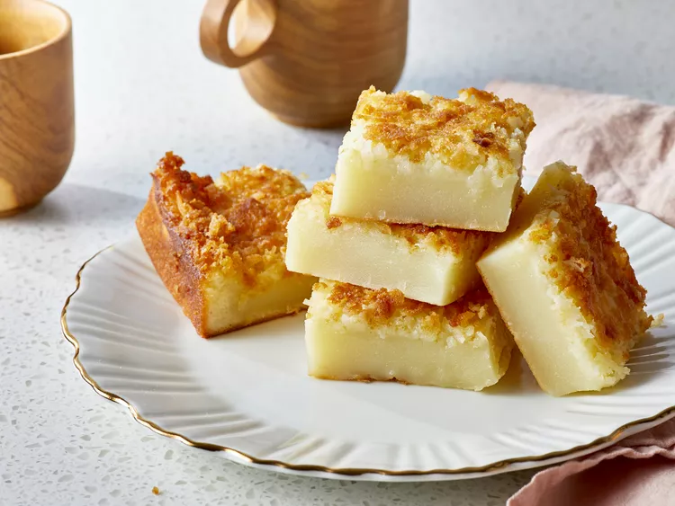

Ono Butter Mochi

Description
This recipe for mochi is an easy Hawaiian local-style treat
made with coconut and butter in a rice flour base.
A great dessert for any tropical themed party.
Ingredients
- 1 pound mochiko
- 2 1/2 cups white sugar
- 1 teaspoon baking powder
- 1/2 cup butter, melted
- 3 cups whole milk
- 5 eggs
- 1 teaspoon vanilla extract
- 1 cup sweetened, flaked coconut
Steps
-
Gather ingredients. Preheat the oven to 175 degrees Celsius.
Grease a 9x3 inch baking dish.
-
In a medium bowl, whisk together the eggs, vanilla and milk.
In a separate larger bowl, stir together the rice flour,
baking powder, and sugar.
-
Pour the wet ingredients into the dry ingredients, and stir to blend.
Mix in melted butter and coconut. Pour into the prepared pan.
-
Bake for 1 hour in the preheated oven.
Cool completely, then cut into squared to serve.